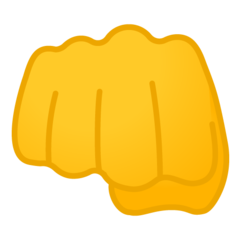
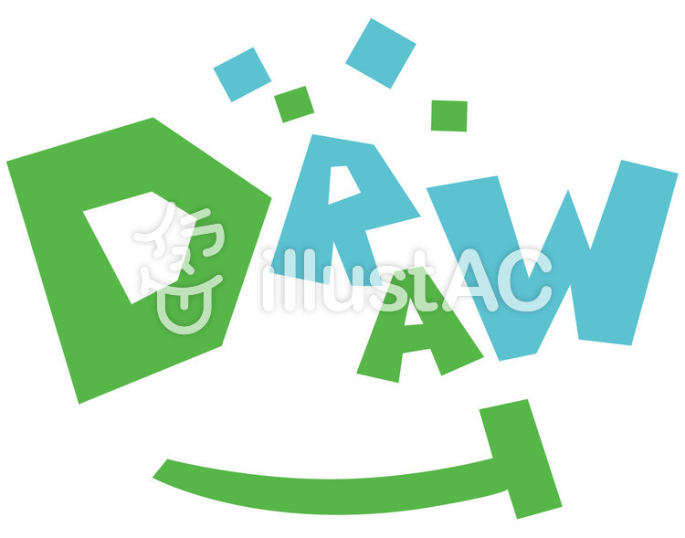
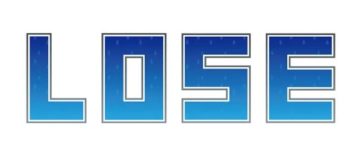

# js_janken<!DOCTYPE html>
<html lang="ja">
<head>
    <meta charset="UTF-8">
    <meta http-equiv="X-UA-Compatible" content="IE=edge">
    <meta name="viewport" content="width=device-width, initial-scale=1.0">
    <link rel="stylesheet" href="css/reset.css">
    <link rel="stylesheet" href="css/sample.css">
    <title>じゃんけん</title>
</head>


<body>
  <header>
    <h1 class="title">じゃんけんサイト</h1>
  </header>
  <main>
    <h2>選んでください</h2>
    <div class="select_user">
        <button id="gu_btn"  onclick="janken(1)"><a href="#com_select"></a></button>
        <button id="cho_btn" onclick="janken(2)"><a href="#com_select"></a></button>
        <button id="pa_btn" onclick="janken(3)"><a href="#com_select"></a></button>
    </div>
    <div class="com_select">
        <div class="com_selectresult">相手の出し手は...?</div>
        
    </div>
        <div class="result">
            <p class="result_text">結果は..</p>
            <p id="result_hyoji"></p>
        </div>
</main>
  <footer></footer>

<script>
function janken(user){
//pcの出し手を配列保存
let pcJankens = [ '' , 'gu.png' , 'cho.png' , 'pa.png' ];
//userの出し手を配列保存
let userJankens = [ 'gu.png' , 'cho.png' , 'pa.png' ];
//結果の配列を保存
let resultJankens = [ "win.png" , "lose.png" , "draw.png" ];
//乱数設定
let pc = Math.ceil(Math.random()*3);
//pc手の画像を表示するimgタグを検索/設定
let pcImg = document.getElementById("pcImg");
pcImg.src = "img/" +pcJankens[pc];
//条件分岐用変数
let conditions = user - pc
let result_hyoji = document.getElementsByClassName('result_hyoji')
let view = "";

if(conditions == 0){//あいこ
  view = '' ;
}
else if(conditions == -1){//勝ち
  view = '' ;
}
else{//負け
  view = '' ;
}
document.getElementById('result_hyoji').innerHTML = view;
}
</script>
</body>
</html>
<!--仮作成:queryselectorを使用した場合にて検討（元ファイルもらってから）
  $("#gu_btn").on("click",function(){
  //乱数
  const r = Math.ceil( Math.randam()*3 );
  //if分岐処理
  let view = "";
  let enemy = "";
  if(r==1){
    view = '';
    enemy = '';
  }
  else if(r==2){
    view = '';
    enemy = '';
  }
  else{
    view = '';
    enemy = '';
  }
  //表示処理
  $("#pcImg").html(enemy);
  $("#resultImg").html(view);
});

$("#cho_btn").on("click",function(){
  //乱数
  //if分岐処理
  //表示処理
});
$("#pa_btn").on("click",function(){
  //乱数
  //if分岐処理
  //表示処理
}); 
-->
